Apa itu SDGs?
Sustainable Development Goals (SDGs) atau Tujuan Pembangunan Berkelanjutan adalah kesepakatan pembangunan global yang disahkan oleh Perserikatan Bangsa-Bangsa (PBB) pada tahun 2015. SDGs dirancang sebagai cetak biru bersama untuk menciptakan perdamaian, menghapus kemiskinan, melindungi bumi, dan memastikan seluruh manusia menikmati kesejahteraan pada tahun 2030.
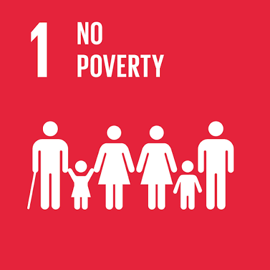
1. Tanpa Kemiskinan
Menghapus segala bentuk kemiskinan di seluruh dunia.

2. Tanpa Kelaparan
Mengakhiri kelaparan, mencapai ketahanan pangan, dan meningkatkan gizi.
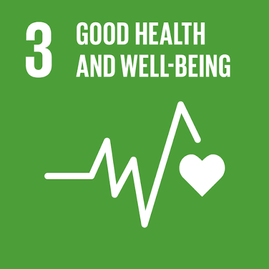
3. Kehidupan Sehat & Sejahtera
Menjamin kehidupan sehat dan kesejahteraan bagi semua usia.
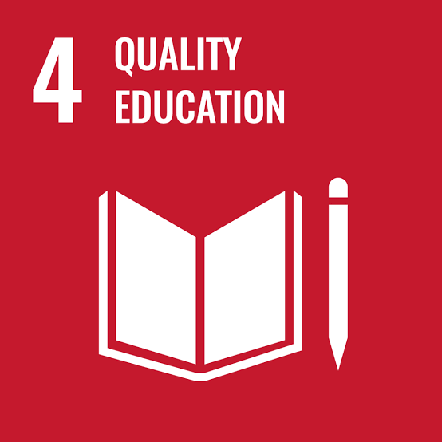
4. Pendidikan Berkualitas
Menjamin pendidikan inklusif, merata, dan kesempatan belajar sepanjang hayat.
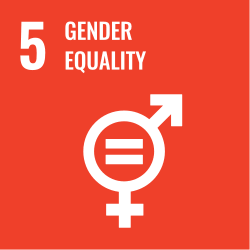
5. Kesetaraan Gender
Mencapai kesetaraan gender dan memberdayakan perempuan.
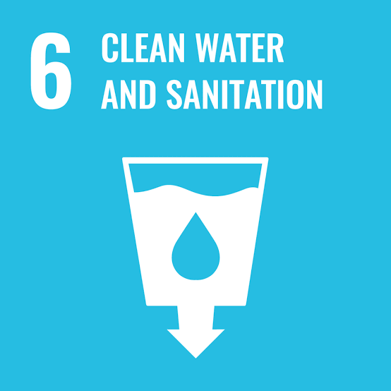
6. Air Bersih & Sanitasi
Menjamin ketersediaan air bersih dan sanitasi berkelanjutan.
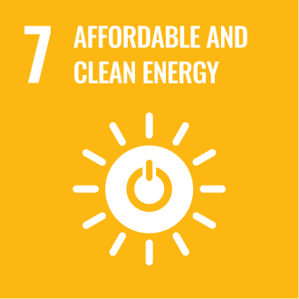
7. Energi Bersih & Terjangkau
Menjamin akses energi yang terjangkau dan berkelanjutan.

8. Pekerjaan Layak & Ekonomi
Mendukung pertumbuhan ekonomi inklusif dan pekerjaan layak.

9. Industri & Infrastruktur
Membangun infrastruktur tangguh dan mendukung inovasi.
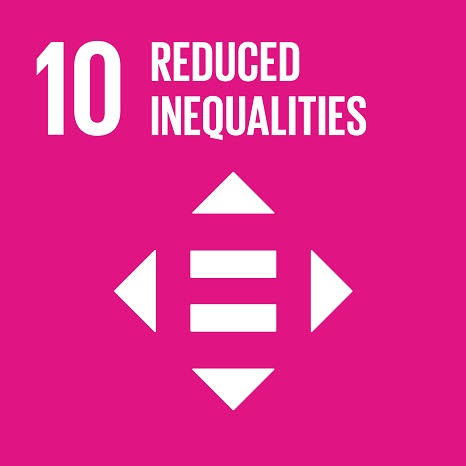
10. Berkurangnya Kesenjangan
Mengurangi kesenjangan di dalam dan antarnegara.
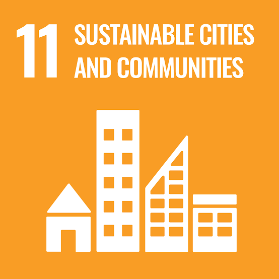
11. Kota Berkelanjutan
Menjadikan kota inklusif, aman, dan berkelanjutan.
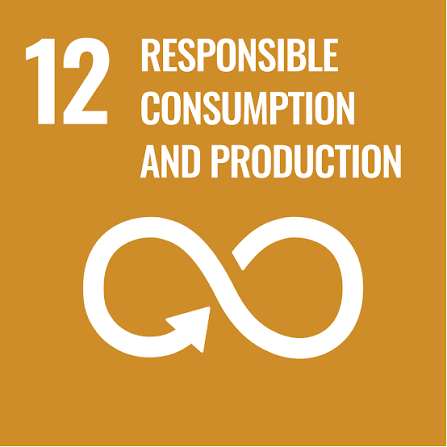
12. Konsumsi Bertanggung Jawab
Menjamin pola produksi dan konsumsi berkelanjutan.
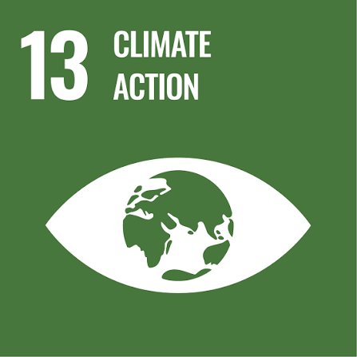
13. Penanganan Perubahan Iklim
Mengambil tindakan cepat mengatasi perubahan iklim.
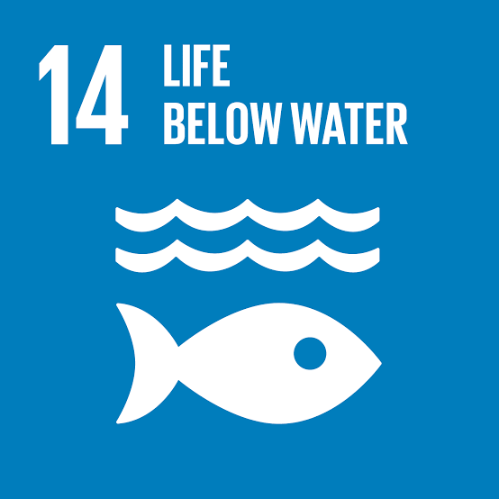
14. Ekosistem Lautan
Melestarikan sumber daya kelautan dan samudra.
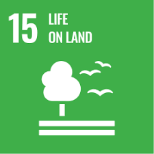
15. Ekosistem Daratan
Melindungi dan memulihkan ekosistem daratan secara berkelanjutan.
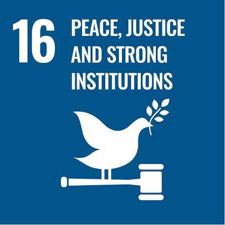
16. Perdamaian & Keadilan
Menguatkan masyarakat damai dan akses keadilan.

17. Kemitraan Mencapai Tujuan
Menguatkan kemitraan global pembangunan berkelanjutan.